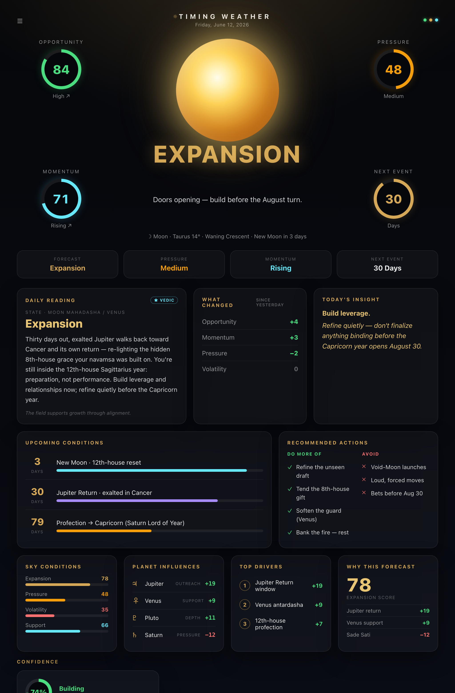
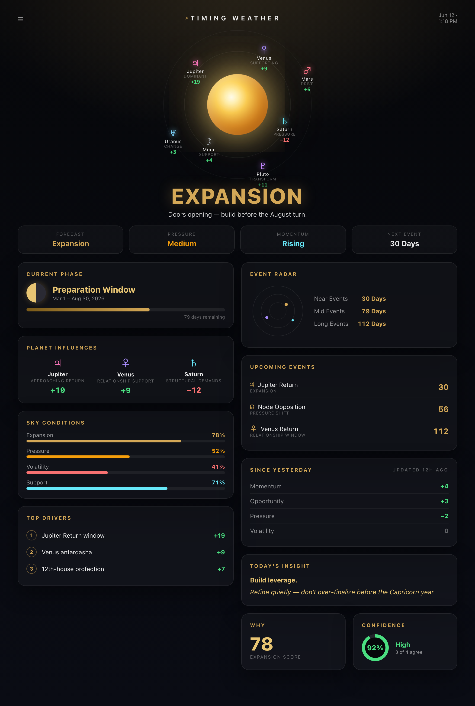

Both are faithful to the reference screenshots you showed: the dense, multi-column dashboard — sun hero, corner gauges, NOW row, then DAILY READING / WHAT CHANGED / INSIGHT, UPCOMING / RECOMMENDED, and a 4-up SKY / PLANET INFLUENCES / TOP DRIVERS / WHY row. Built for iPad/desktop width (the references are 1024px), in your gold solar aesthetic, with your real chart data.

Reference 1, rebuilt as a working dashboard: glowing sun + four corner gauges (Opportunity / Pressure / Momentum / Next Event), the NOW strip, then everything visible on one screen — Daily Reading, What Changed, Today's Insight, Upcoming Conditions, Recommended Actions, Sky Conditions, Planet Influences, Top Drivers, Why, Confidence.

Reference 2, rebuilt: the sun with its transiting planets orbiting on rings (each labeled with its influence — Jupiter +19, Saturn −12…), then a dense two-column grid — Current Phase + Event Radar, Planet Influences + Upcoming Events, Sky Conditions + Since Yesterday + Insight, and Why + Confidence.